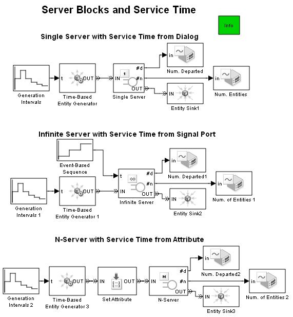
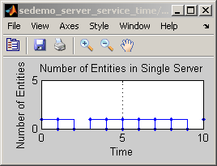
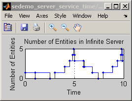
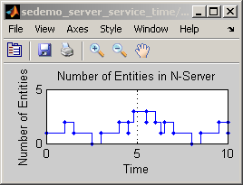

Server Blocks and Service Time
Contents
Overview
This model illustrates features of blocks in the Servers library. Distinct portions of the model vary the number of servers and the way to specify each entity's service time.
Description
The top portion of the model uses a Single Server block whose Service time parameter specifies a constant service time for all entities.
The middle portion of the model uses an Infinite Server block that has a signal input port labeled t because the Service time from parameter is set to Signal port t. When an entity arrives at the server, the block uses the current value of the signal that connects to the t port as the service time for that entity.
The bottom portion of the model assigns an attribute called myServiceTime to each entity. When an entity arrives at the N-Server block, the block uses the value of the attribute as the service time for that entity. In the block's dialog box, the Service time from parameter is set to Attribute and the Attribute name parameter is set to myServiceTime.
Plots show the number of entities in each server. For the Single Server block, this number never exceeds 1. For the N-Server block, the number of entities in the server never exceeds N, which is 3 in this case. Plots also show the cumulative number of entities that have departed from each server.
  